The purpose of this article is the construction of standing wave solutions of equation (1) with M=0, using asymptotic methods. They can only be applied provided
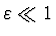
.We use the Poincare-Lindstedt method: introduce the new time
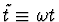
and seek a doubly periodic solution of equation (1)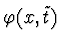
and the frequency (in time)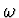
in the form of power series in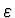
: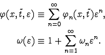
After we expand the Lagrange-Euler equation in a power series in and obtain a sequence of equations. Write two leading equations:
1) To zero order in the equation in
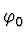
is: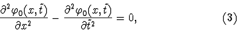
2) To first order in the equation in ,
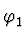
and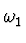
is: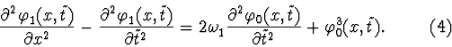
Equation (3) has many periodic solutions. If we select as a solution for this equation the function
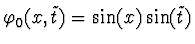
, then the second equation hasn't periodic solutions, because the frequency of the external force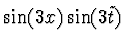
is equal to the frequency of its own oscillations and it is impossible to put this resonance harmonic to zero, selecting only . In massless case correct selection of not only the frequency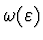
, but also the function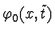
allows to find a uniform expansion.